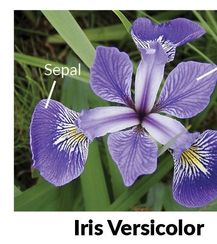
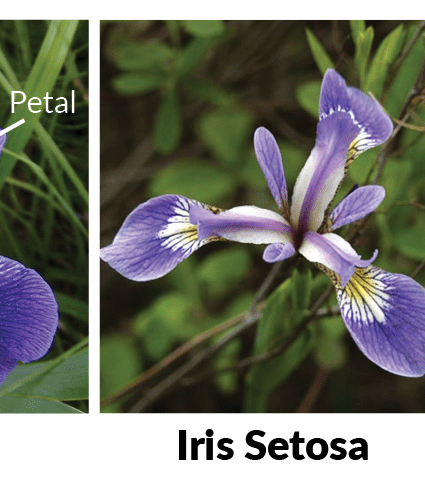
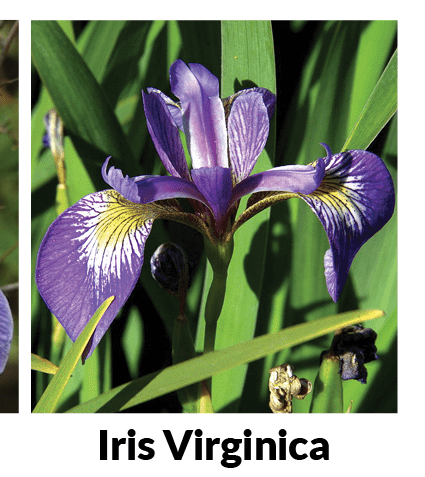
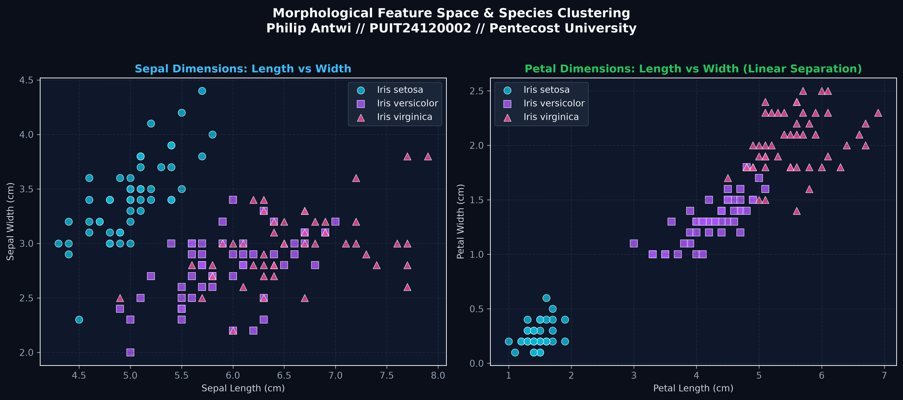

NEURAL-IRIS AI PROD V3.0
Select Species to Test Inference Or Compare Morphometrics

Class 0 // 100% SeparableIdentified by short, delicate petals paired with broad sepals having prominent yellow veins at the base. Forms a distinct, perfectly linearly separable cluster.

Class 1 // IntermediateFeatures violet-blue petals with darker purple veins and yellow-white blotches on the sepals. Shares an intermediate decision boundary with Virginica.

Class 2 // RobustDisplays elongated, robust petals and deep violet sepals with a bright golden hairy crest. Represents the largest morphological flower in the dataset.
IRIS VERSICOLOR
Intermediate petal morphology located between Setosa and Virginica boundaries.
Interactive Visual Analysis & Exact Mathematical Metrics
Interactive 3×3 Confusion Matrix (30 Test Samples)
29 / 30 CORRECTClick or hover any cell below to inspect True Positives (TP), False Positives (FP), and False Negatives (FN).
| Pred. Setosa | Pred. Versicolor | Pred. Virginica | |
|---|---|---|---|
| Actual Setosa | 10 TP (100%) | 0 0% | 0 0% |
| Actual Versicolor | 0 0% | 9 TP (90%) | 1 Err (10%) |
| Actual Virginica | 0 0% | 0 0% | 10 TP (100%) |
📐 Mathematical Metric Derivations
HARMONIC MEAN1. Precision (Exactness)
2. Recall (Sensitivity / Completeness)
3. F1-Score (Harmonic Mean)
| Class | Precision | Recall | F1-Score | Support |
|---|---|---|---|---|
| Iris setosa | 1.00 | 1.00 | 1.00 | 10 |
| Iris versicolor | 1.00 | 0.90 | 0.95 | 10 |
| Iris virginica | 0.91 | 1.00 | 0.95 | 10 |
| Accuracy / Macro Avg | 0.97 | 0.97 | 0.967 (96.67%) | 30 |

